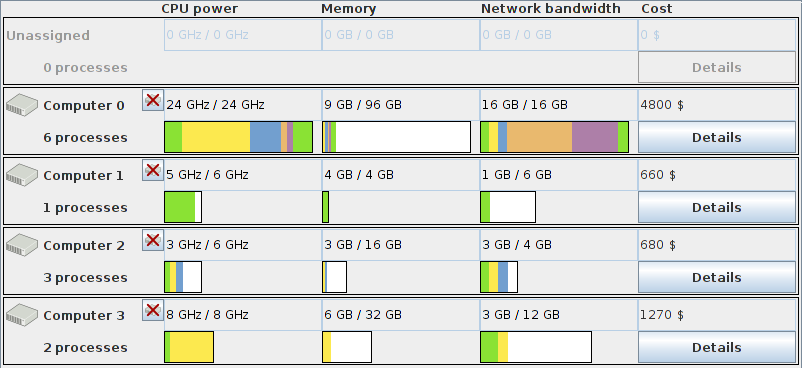
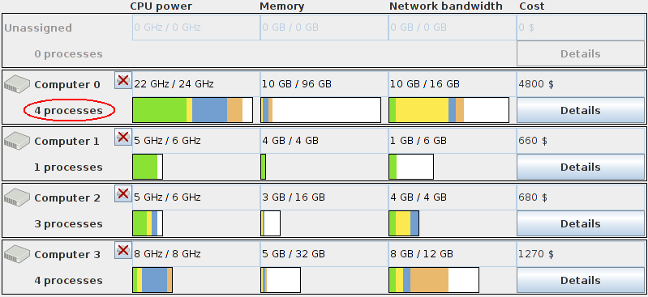
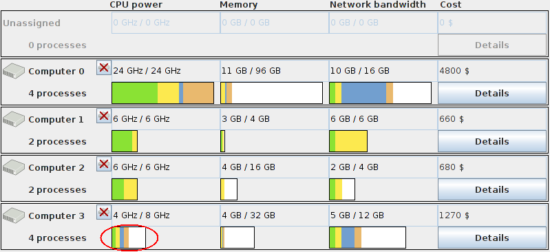
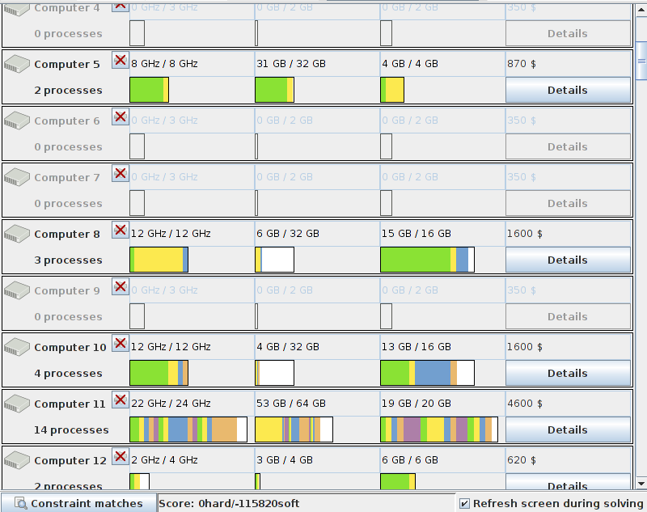
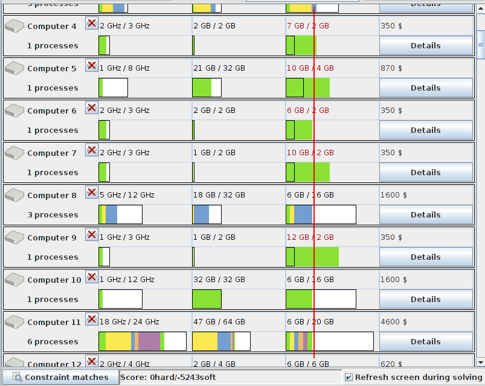

Introduction
This training will help you become an OptaPlanner expert. Count how many labs you can complete correctly without cheating :)
Prerequisites
-
Basic understanding of Java development
-
Basic understanding of DRL (drools rule language)
Preparation
-
Open the the reference manual in your browser.
-
Read the chapter Introduction.
-
Read the chapter Quick start.
-
Read the table of contents (TOC). Grok the structure of the reference manual.
-
-
Unzip the
optaplanner-training-*.zip. This is a different zip thanoptaplanner-distribution-\*.zip. -
Open your favorite IDE (IntelliJ, Eclipse, NetBeans).
Troubleshooting
-
If you have any trouble running the code in your favorite IDE, read this.
Part 0: What is a planning problem?
Print the exercises on paper and complete them. Verify your answers with the OptaPlanner examples:
-
Open the NQueens example and quick open dataset
8queens. -
Open the Traveling Salesman example and import dataset
tutorial/st68.tsp. Right click to connect a location to the end of the trip.
Part 1: Customizing the score function
Each business has specific constraints. In this part we will learn to cater for those constraints by adjusting the score function accordingly.
Lab 100: Quick questions
Weighting the wishes of nurses
In a hospital nurse rostering use case, we have these constraints:
-
Double shift: No nurse should work 2 shifts on the same day.
-
This is more important than any other constraint, no matter how many times that other constraint is matched.
-
-
Parenting nurses: Nurses with children don’t want to work on Wednesday afternoon.
-
Young nurses Saturday night: Young nurses don’t want to work on Saturday night.
-
This is twice as important as the Parenting nurses constraint.
-
-
Young nurses Sunday morning: Young nurses don’t want to work on Sunday morning.
-
This is a third as important as the Young nurses Saturday night constraint.
-
Specify the ScoreDefinitionType and determine the score weight and level of each constraint.
Solution
The ScoreDefinitionType is HARD_SOFT because we need 2 score levels.
The weight and level for each constraint:
-
Double shift:
-1hardfor each match-
scoreHolder.addHardConstraintMatch(kcontext, -1);
-
-
Parenting nurses:
-3softfor each match-
scoreHolder.addSoftConstraintMatch(kcontext, -3);
-
-
Young nurses Saturday night:
-6softfor each match-
Because
-3softtimes2is-6soft -
scoreHolder.addSoftConstraintMatch(kcontext, -6);
-
-
Young nurses Sunday morning:
-2softfor each match-
Because
-6softdivided by3is-2soft -
scoreHolder.addSoftConstraintMatch(kcontext, -2);
-
Any multiple applied to all of the soft or hard numbers is fine too (for example -30soft;-60soft;-20soft;-1hard),
but it would increase the likeliness of overflow.
Using decimal or floating point numbers (for example -1.5soft;-3.0soft;-1.0soft;-1hard) is a bad idea:
-
Decimal numbers (
BigDecimal) heavily slow down the score calculation. -
Floating point numbers (
doubleorfloat) cause errors.
Weighting the costs of manufacturing jobs
In a manufacturing job shop scheduling use case, we have have these constraints:
-
Machine conflict: a machine can only process 1 job at a time. (This is physical reality.)
-
There can be up to
50 000jobs and200machines. -
Each job takes between
30seconds and5minutes. -
The planning window is
24hours: a job can start at any time on any machine during that window.
-
-
Machine cost: Each machine has a specific power cost per second in dollars.
-
Older machines have a higher power cost, newer machines have a smaller power cost.
-
The power cost per second is between
1dollar cent and10dollars.
-
-
Nighttime cost: Any job starting outside normal working hours (before 8:00 or after 18:00) costs an extra
1dollar per second. -
Employee happiness: Some of the machines are labor intensive or clumsy to work with. Minimize the time they have to work with those.
-
The company values profit exclusively over employee happiness. It doesn’t believe that employee retention has an impact on profit.
-
Specify the ScoreDefinitionType and determine the score weight and level of each constraint.
Solution
The ScoreDefinitionType is HARD_MEDIUM_SOFT_LONG because we need 3 score levels and to avoid overflow.
The weight and level for each constraint:
-
Machine conflict:
-1hardper second that the jobs conflict-
scoreHolder.addHardConstraintMatch(kcontext, - job1.conflictingDurationWith(job2));
-
-
Machine cost:
-1mediumper dollar cent of machine power cost and per second of job duration-
scoreHolder.addMediumConstraintMatch(kcontext, - machine.getPowerCostInDollarCent() * job.getDurationInSeconds());
-
-
Nighttime cost:
-100mediumper second of job duration-
Because the medium score level represents dollar cents, not dollars.
-
scoreHolder.addMediumConstraintMatch(kcontext, -100 * job.getDurationInSeconds());
-
-
Employee happiness:
-1softper second of job duration-
Soft because the company prioritizes an extra profit of 1 dollar cent, even if that makes all its employees unhappy.
-
Note: Most companies do realize that employee retention impact profit: they factor in employee unhappiness by putting a price tag on it.
-
-
scoreHolder.addSoftConstraintMatch(kcontext, - job.getDurationInSeconds());
-
It uses 3 score levels:
-
Hard: constraints of the universe
-
Medium: profit (currently it only contains expenses, so it’s a negative number)
-
Soft: employee happiness
It requires to the use of long numbers instead of int (at least for the medium level), to avoid overflow:
-
There are
50 000jobs. -
Each job has a maximum duration of
5minutes (or300seconds).-
This totals up to a maximum of
15 000 000seconds to pay for.
-
-
Each machine cost up
10dollars (or1000dollar cents) per used second.-
This totals up to a maximum cost of
15 000 000 000dollar cents (without even taking the nighttime cost in account), which needs to fit in the medium score level. -
The maximum
intvalue is only2 147 483 647: the medium score level would overflow, so it needs to use alonginstead.
-
Lab 101: No more than 4 processes per computer
The customer’s use case is closely resembles the OptaPlanner example CloudBalancing. But there’s 1 big difference:
-
Don’t assign too many processes to the same computer
Preparation
-
Import as a new project in your favorite IDE:
optaplanner-training-lab101/pom.xml -
Create a new run configuration:
-
Main class:
org.optaplanner.examples.cloudbalancing.app.CloudBalancingApp -
VM parameters (optional):
-Xmx512M -server -
Working directory:
optaplanner-training-lab101(this is the directory that contains the directorydata)
-
-
Run the run configuration.
-
Quick open
4computer-12processes.xml, solve it and terminate solving early after about 20 seconds. -
Notice how the solution assigns 6 processes to computer 0:
 -
Leave this window open to compare it later with your modified version.
-
Assignment
-
Add a new hard constraint: no computer should have more than 4 processes assigned to it.
Success criteria
-
Open and solve
4computer-12processes.xml. It should no longer have a computer with more than 4 processes: -
Open and solve
100computer-300processes.xml, in both the old and the new window. Compare the results.-
Both solutions should become feasible (
0hard). -
The old window’s soft score is clearly better because it has more flexibility.
-
Tips
-
Add a new score rule in the file
cloudBalancingScoreRules.drl. No other files require changes. -
Read up about score traps, especially if
100computer-300processes.xmldoes not become feasible.
Solution
Implementation
-
Add this rule in the file
cloudBalancingScoreRules.drl:rule "atMost4ProcessesPerComputer" when $computer : CloudComputer() accumulate( $c : CloudProcess(computer == $computer); $count : count($c); $count > 4 ) then scoreHolder.addHardConstraintMatch(kcontext, 4 - $count.intValue()); end
Pitfalls
A computer that has 6 processes is worse than a computer that has 5 processes. The score function should reflect that, even if the customer’s business analyst does not want to think about any solution for which a computer has more than 4 computers (because it’s an infeasible solution).
This code might trigger a score trap:
rule "atMost4ProcessesPerComputer"
when
...
then
scoreHolder.addHardConstraintMatch(kcontext, -1); // BAD: score trap
endLab 102: No process should hog half the CPU power
The customer’s use case is closely resembles the OptaPlanner example CloudBalancing. But there’s 1 big difference:
-
Don’t let a process hog half the CPU power of a computer (unless the computer doesn’t have much CPU).
Preparation
-
Import as a new project in your favorite IDE:
optaplanner-training-lab102/pom.xml -
Create a new run configuration:
-
Main class:
org.optaplanner.examples.cloudbalancing.app.CloudBalancingApp -
VM parameters (optional):
-Xmx512M -server -
Working directory:
optaplanner-training-lab102(this is the directory that contains the directorydata)
-
-
Run the run configuration.
-
Quick open
4computer-12processes.xml, solve it and terminate solving early after about 20 seconds. -
Click on the button Details of computer 3 to find out which process id’s are assigned to it.
-
Notice how process 9 hogs 87.5% of the CPU of computer 3:
-
Leave this window open to compare it later with your modified version.
-
Assignment
-
A process is hogging the CPU of a computer if it requires more than half of the computer’s CPU power.
-
Exception: A computer with
6CPU or less is never considered hogged.
-
-
Add a new hard constraint: no process should hog the CPU of a computer.
-
The customer has decided that they want the hogging implementation formula in Java, not in DRL.
-
But the constraint itself should be in DRL.
-
Success criteria
-
Open and solve
4computer-12processes.xml. It should no longer assign process 9 to computer 3:-
It must be feasible (
0hard). -
Process 5 is (probably) still assigned to computer 1 and 2, because those computers have
6CPU.
-
-
Open and solve
100computer-300processes.xml, in both the old and the new window. Compare the results.-
Both solutions should become feasible (
0hard). -
The old window’s soft score is probably better because it has more flexibility.
-
Tips
-
Add a new Java method that checks if a process is hogging its computer.
-
Add a new score rule in the file
cloudBalancingScoreRules.drland reuse that method.
Solution
Imperfect implementation
-
Add this method in the file
CloudProcess.java:public boolean isHoggingCpuPower() { if (computer == null || computer.getCpuPower() <= 6) { return false; } return requiredCpuPower * 2 > computer.getCpuPower(); } -
Add this rule in the file
cloudBalancingScoreRules.drl:rule "hoggingCpuPower" when CloudProcess(hoggingCpuPower == true) then scoreHolder.addHardConstraintMatch(kcontext, -1); end
|
Note
|
That code might trigger a score trap. |
Correct implementation
This code does not trigger that score trap:
-
Add these 2 methods in the file
CloudProcess.java:public boolean isHoggingCpuPower() { if (computer == null || computer.getCpuPower() <= 6) { return false; } return requiredCpuPower * 2 > computer.getCpuPower(); } public int getHoggingCpuPowerAmount() { if (!isHoggingCpuPower()) { return 0; } return requiredCpuPower * 2 - computer.getCpuPower(); } -
Add this rule in the file
cloudBalancingScoreRules.drl:rule "hoggingCpuPower" when $p : CloudProcess(hoggingCpuPower == true) then scoreHolder.addHardConstraintMatch(kcontext, - $p.getHoggingCpuPowerAmount()); end
Lab 103: Distribute network bandwidth fairly
The customer’s use case is closely resembles the OptaPlanner example CloudBalancing. But there are differences:
-
The computers are already bought, so we might as well use them all
-
All computers have the same network bandwidth.
-
The network bandwidth should be load balanced (= distributed fairly) across all computers.
Preparation
-
Import as a new project in your favorite IDE:
optaplanner-training-lab103/pom.xml -
Create a new run configuration:
-
Main class:
org.optaplanner.examples.cloudbalancing.app.CloudBalancingApp -
VM parameters (optional):
-Xmx512M -server -
Working directory:
optaplanner-training-lab101(this is the directory that contains the directorydata)
-
-
Run the run configuration.
-
Quick open
100computer-300processes.xml, solve it and terminate solving early after about 20 seconds. -
Notice how the used network bandwidth heavily differs per computer (and that capacity clearly limits it):
 -
Leave this window open to compare it later with your modified version.
-
Assignment
-
Remove the hard constraint
requiredNetworkBandwidthTotal -
Remove the soft constraint
computerCost -
Add a new soft constraint: The network bandwidth used per computer should be as equal as possible (evenly distributed).
|
Note
|
The GUI will still show the network bandwidth capacity per computer and color it red. Just ignore that. |
Success criteria
-
Open and solve
100computer-300processes.xml.-
It must be feasible (
0hard). -
All computers must be used.
-
The total network bandwidth used per computer must be close to each other, except if the computer has a single process which uses far more network bandwidth.
-
-
Compare the results with the old window.
Tips
-
Remove 2 score rules and add a new score rule in the file
cloudBalancingScoreRules.drl. No other files require changes. -
Read up about fairness score constraints.
-
There is no law which says that a score (hard or soft) should converge to 0.
Solution
Implementation
-
In the file
cloudBalancingScoreRules.drl, remove the rulesrequiredNetworkBandwidthTotalandcomputerCost. -
Add this rule in the file
cloudBalancingScoreRules.drl:rule "distributeNetworkBandwidthFairly" when $computer : CloudComputer() accumulate( CloudProcess( computer == $computer, $requiredNetworkBandwidth : requiredNetworkBandwidth); $total : sum($requiredNetworkBandwidth) ) then scoreHolder.addSoftConstraintMatch(kcontext, - ($total * $total)); end
Part 2: Designing the model
The most difficult thing to learn is - by far - how to design a good domain model. Which class is a planning entity? Which property is a planning variable?
Lab 200: Quick questions
Each solution is in the docs: each problem is an existing example with a annotated class diagram in the docs.
Lab 201: Tennis friends
Problem description
A number of couples play double tennis together. Each couple is a team. They rent 2 tennis courts every Tuesday evening during 4 months (18 weeks). There are 7 teams. On a given Tuesday evening, 4 distinct teams show up and they play 3 matches each: one against every other team there.
Decide which teams play on which Tuesday evening.
Not every Tuesday evening fits for every team: every team marks the dates which it is unable to play. All teams like to play as much as possible, so distribution should be fair (as far as that’s possible): all teams should play an almost equal number of times. Nice to have: They don’t like to play against the same opponent every time, so it would be nice to have that all each team plays against every other teams a similar number of times.
Presume that the number of teams (7) and the number of weeks (18) can change every season.
Assignment
-
Draw an UML class diagram of the domain objects needed for solving the optimization problem. Include:
-
All relevant domain classes for solving the optimization problem. For example:
Team,Day, … -
Every relationship between those classes, including cardinality. For example:
Foohas aManyToOnerelationship toBar.-
Do not include non-domain classes, such as
SolverorTennisDaoetc. -
Adding fields/properties/methods for each class is entirely optional.
-
-
Annotate which classes have an
@PlanningEntityannotation. -
Annotate which properties of each class have an
@PlanningVariableannotation. -
Annotate which classes have an
@PlanningSolutionannotation. -
Annotate which fields/properties of each class have an
@PlanningEntityCollectionPropertyannotation.
-
-
Calculate the size of the search space (without taking the unavailability constraint into account).
-
How many constraint types (= how many score rules) do you expect to become implemented?
Do not look at the Tennis example in the documentation or examples. That’s cheating. The problem description above is intentionally less straightforward.
Success criteria
-
A drawing of an UML class diagram which resembles the class diagram of the CloudBalancing example.
-
Add the
@PlanningEntityannotation and the@PlanningVariableannotation where needed.
-
-
Search space size
-
Number of constraint types
Tips
-
Ask yourself: what are the pigeons and what are the pigeons holes?
-
It’s highly recommended that the number of planning entities is stable during solving.
-
Read up about how to draw an UML class diagram.
Solution
Class design

-
What are the pigeons and what are the pigeons holes?
-
Every Tuesday, there are 4 spots to fill. Over 18 weeks that makes 72 spots to fill.
-
Each of those spots, is a
TeamAssignmentinstance. That class is the planning entity. -
A
TeamAssignmentis clearly defined by aDayand anindexInDay(0, 1, 2 or 3). Those 2 properties are a unique business key, immutable during solving. -
OptaPlanner’s job is to find the best
Teamto schedule for each spot, soTeamAssignment.getTeam()is the planning variable (so definitely not immutable during solving). -
Notice how
TeamAssignmenthas aManyToOnerelationship toTeam.
-
-
-
Why is
TeamAssignment.getDay()not a planning variable?-
Despite that
TeamAssignmenthas aManyToOnerelationship toDay, it makes a poor planning variable, becauseTeammakes a poor business key (part). -
Even if the day is a planning variable, a
TeamAssignmentcannot fill in theTeamfield decidedly:-
The number of times each team plays is unknown.
-
Some teams will play 10 days, others 11 days (because
18*4/7 = 10.29), presuming the unavailability constraint allow this. -
If the unavailability constraint is very disruptive, some teams might even only play 9 days or less, possibly even allowing others to play 12 days or more.
-
-
-
-
Why not make both
TeamAssignment.getDay()andTeamAssignment.getTeam()each a planning variable?-
Then what defines a
TeamAssignment? -
This would blow up the search space a lot more. This impacts Solver speed a lot.
-
The build-in fine grained moves might no longer suffice to get efficiently from feasible solution to feasible solution. This impacts Solver speed.
-
Search space size
valueSizeentitySize = 772 = 1060
Number of constraint types
4 constraint types (score rules):
-
oneAssignmentPerDatePerTeam (hard)
-
unavailabilityPenalty (hard)
-
fairAssignmentCountPerTeam (medium)
-
evenlyConfrontationCount (soft)
Lab 202: House cleaner scheduling
Problem description
A cleaning company cleans houses. It needs to match cleaners and houses in a week.
-
Each cleaner cleans exactly 1 house per day. He/she cleans it entirely during that day, alone.
-
Each house needs to be cleaned once, at a specified day of the week (determined by the house owner).
-
A cleaner works from Monday to Friday. some cleaners work only 3 days in a week, but the company can chose when.
-
A cleaner travels from his/her home to one house in the morning and travels back in the evening.
Plan a schedule of the cleaning company for an entire week. Minimize the overall travelling distance of the cleaners.
Assignment
-
What is the planning entity class(es)?
-
What is the planning variable(s)?
-
What is the planning value class(es)?
-
Extra credit: Write the DRL score rules in pseudo code.
-
Smart-ass extra credit: Why does the problem description stipulate that some cleaners don’t work full-time? What would happen if they all work full-time?
Presume there is a Location class with a functioning long getDistance(Location) method.
Success criteria
-
Describe the relevant domain classes and their fields.
-
Add the
@PlanningEntityannotation and the@PlanningVariableannotation where needed.
-
Solution
Answers
-
Planning entity class:
House -
Planning variable:
House.getCleaner() -
Planning value class:
Cleaner
Domain code
public class Cleaner {
private Location home;
}@PlanningEntity
public class House {
private Location location;
private DayOfWeek dayOfWeek;
// Note: annotation must be on getter instead of field
@PlanningVariable private Cleaner cleaner;
}-
Why is
Houseis the planning entity and notCleaner?-
1 cleaner handles multiple houses, but 1 house has only 1 cleaner, so
Househas a manyToOne relationship toCleaner. -
Furthermore, the number of
Houseinstances is stable during planning.
-
-
What about the travelling distance constraint? Isn’t this like Vehicle Routing? Isn’t the planning variable chained?
-
No. The cleaners go home after every house.
-
So it doesn’t matter which house they cleaned the day before, because they always have to go home first.
-
So it’s not like TSP/VRP. So there’s no need for the complexity of chained planning variables.
-
Furthermore, because the DayOfWeek is fixed, introducing chained variables would require additional constraint rules.
-
Score rules
rule "Conflict: 1 cleaner has to clean 2 houses on the same day of week"
when
House($c : cleaner, $d : dayOfweek, $leftId : id)
House(cleaner == $c, dayOfWeek == $d, id > $leftId)
then
scoreholder.addHardConstraintMatch(kcontext, -1);
endrule "Minimize travelling distance"
when
House($d : location.getDistance(cleaner.home)))
then
scoreholder.addSoftConstraintMatch(kcontext, - $d);
endNote: This last rule doesn’t imply fairness across the cleaners. For example, if all cleaners live in Manhattan and 98 houses are in Manhattan, but 2 houses are in Queens, it’s still possible that both Queens houses are assigned to the same cleaner (which really isn’t fair). To make it fair, apply the fairness trick.
What would happen if all cleaners work full-time?
Then we can split up the planning problem of an entire week into 5 separate problems, once per day, without losing score quality, because:
-
The DayOfWeek of every house is fixed.
-
The number of times a cleaner works on other days doesn’t constrain the planning of 1 day.
It’s far easier to solve 5 smaller problems, than to solve 1 big one. But because not all cleaners work full-time, we must not do that, because during the split up it’s impossible to predict which days a half-time working cleaner needs to work.
Lab 203: Office cleaner scheduling
Problem description
A cleaning company cleans offices. It needs to match cleaners and offices in a week.
-
Each cleaner cleans exactly 1 office per day, together with 2 other cleaners. Those 3 cleaners clean it entirely during that day.
-
A cleaner can work with different colleagues during the week.
-
All offices need to be cleaned once by 3 cleaners on the same day. The cleaning company can decide the day of the week.
-
A cleaner travels from his/her home to one office in the morning and travels back in the evening.
Plan a schedule of the cleaning company for an entire week. Minimize the overall travelling distance of the cleaners.
Assignment
-
What is the planning entity class(es)?
-
What is the planning variable(s)?
-
What is the planning value class(es)?
-
Extra credit: write the DRL score rules in pseudo code.
Presume there is a Location class with a functioning long getDistance(Location) method.
Success criteria
-
Describe the relevant domain classes and their fields.
-
Add the
@PlanningEntityannotation and the@PlanningVariableannotation where needed.
-
Solution
Answers
-
Planning entity classes:
-
Office -
OfficeCleaningSpot, identified by anOfficeand aspotIndex(0,1, or2)
-
-
Planning variables:
-
Office.getDayOfWeek() -
OfficeCleaningSpot.getCleaner()
-
-
Planning value classes:
-
DayOfWeekforOffice.getDayOfWeek() -
CleanerforOfficeCleaningSpot.getCleaner()
-
Domain code
public class Cleaner {
private Location home;
}@PlanningEntity
public class Office {
private Location location;
// Note: annotation must be on getter instead of field
@PlanningVariable private DayOfWeek dayOfWeek;
}@PlanningEntity
public class OfficeCleaningSpot {
private Office office;
private int spotIndex; // 0, 1 or 2
// Note: annotation must be on getter instead of field
@PlanningVariable private Cleaner cleaner;
}Score rules
rule "Conflict: 1 cleaner has to clean 2 houses on the same day of week"
when
OfficeCleaningSpot($c : cleaner, $d : office.dayOfweek, $leftId : id)
OfficeCleaningSpot(cleaner == $c, dayOfWeek == $d, id > $leftId)
then
scoreholder.addHardConstraintMatch(kcontext, -1);
endrule "Minimize travelling distance"
when
OfficeCleaningSpot($d : office.location.getDistance(cleaner.home)))
then
scoreholder.addSoftConstraintMatch(kcontext, - $d);
endMove discussion
If all cleaners work full time, then a ChangeMove or SwapMove that changes Office.getDayOfWeek()
is unlikely to lead to a feasible solution, which can end up straining the metaheuristics.
There are several ways to alleviate that strain (if desired):
smarter (custom) moves, Strategic Oscillation Tabu Search, Ruin And Recreate (not yet supported), …
Part 3: Algorithm benchmarking and tweaking
TODO
Part 4: Continuous and real-time planning
TODO
Part 9: Putting it all together
Implement these use cases, given a domain model and data.
Lab 901: Game the US elections
Decide in which US states half of the population plus one should vote for the gamer candidate, for that candidate to win with as little votes as possible.
Constraints
Presume everyone US citizen votes and there are only 2 candidates.
Hard constraints:
-
The gamer candidate must collect at least 270 EC votes.
Soft constraints:
-
Minimize the number of votes for the gamer candidate.
Lab 902: Worker rostering
Schedule steel mill workers into shifts on different spots at different timeslots.
Constraints
Hard constraints:
-
Required skill for a shift
-
Unavailable time slots for an employee
-
At most one shift assignment per day per employee
-
No 2 shifts within 10 hours from each other
Soft constraints:
-
Fairness: all employees should work about the same number of shifts
-
Affinity: assign an employee to the same spot as much as possible
Other requirements:
-
Don’t change shift assignments locked by the user.
-
Don’t change historic shift assignments.